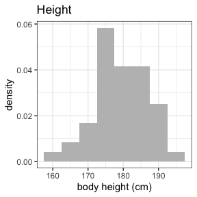
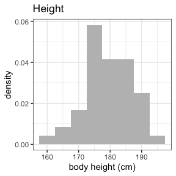

This is a package to create NONMEM input files (NIF) from SDTM data.
Installation
You can install the development version of nif like so:
devtools::install_github("rstrotmann/nif", build_vignettes=TRUE)Example
NIF data set creation
This is a very basic example using a sample SDTM object to create a NIF data set using make_nif():
library(nif)
library(tidyverse)
sdtm <- examplinib_sad
make_nif(sdtm) %>%
compress() %>%
head()
#> REF STUDYID ID USUBJID NTIME TIME TAD ANALYTE AMT RATE DV
#> 1 1 2023000001 1 20230000011010001 0.0 0.0 0.0 RS2023 5 0 NA
#> 2 2 2023000001 1 20230000011010001 0.0 0.0 0.0 RS2023 0 0 0.0000000
#> 3 3 2023000001 1 20230000011010001 0.5 0.5 0.5 RS2023 0 0 0.0024470
#> 4 4 2023000001 1 20230000011010001 1.0 1.0 1.0 RS2023 0 0 0.0072445
#> 5 5 2023000001 1 20230000011010001 1.5 1.5 1.5 RS2023 0 0 0.0157476
#> 6 6 2023000001 1 20230000011010001 2.0 2.0 2.0 RS2023 0 0 0.0209229
#> LNDV MDV CMT EVID DOSE AGE SEX RACE HEIGHT WEIGHT BMI ACTARMCD
#> 1 NA 1 1 1 5 43 0 WHITE 187.4 77 21.9256 C1
#> 2 -Inf 0 2 0 NA 43 0 WHITE 187.4 77 21.9256 C1
#> 3 -6.012892 0 2 0 5 43 0 WHITE 187.4 77 21.9256 C1
#> 4 -4.927513 0 2 0 5 43 0 WHITE 187.4 77 21.9256 C1
#> 5 -4.151067 0 2 0 5 43 0 WHITE 187.4 77 21.9256 C1
#> 6 -3.866911 0 2 0 5 43 0 WHITE 187.4 77 21.9256 C1
#> PARENT METABOLITE TRTDY DTC EXSEQ EXTRT
#> 1 RS2023 FALSE 1 2000-12-31 10:18:00 1 EXAMPLINIB
#> 2 RS2023 FALSE 1 2000-12-31 10:18:00 NA EXAMPLINIB
#> 3 RS2023 FALSE 1 2000-12-31 10:48:00 1 EXAMPLINIB
#> 4 RS2023 FALSE 1 2000-12-31 11:18:00 1 EXAMPLINIB
#> 5 RS2023 FALSE 1 2000-12-31 11:48:00 1 EXAMPLINIB
#> 6 RS2023 FALSE 1 2000-12-31 12:18:00 1 EXAMPLINIBIn many cases, you may want to add further covariates after make_nif(), see this slightly more elaborate example:
nif <- make_nif(sdtm, silent = TRUE) %>%
compress() %>%
mutate(COHORT = ACTARMCD) %>%
add_bl_lab(examplinib_sad %>% domain("lb"), "CREAT") %>%
add_bl_crcl()
head(nif)
#> REF STUDYID ID USUBJID NTIME TIME TAD ANALYTE AMT RATE DV
#> 1 1 2023000001 1 20230000011010001 0.0 0.0 0.0 RS2023 5 0 NA
#> 2 2 2023000001 1 20230000011010001 0.0 0.0 0.0 RS2023 0 0 0.0000000
#> 3 3 2023000001 1 20230000011010001 0.5 0.5 0.5 RS2023 0 0 0.0024470
#> 4 4 2023000001 1 20230000011010001 1.0 1.0 1.0 RS2023 0 0 0.0072445
#> 5 5 2023000001 1 20230000011010001 1.5 1.5 1.5 RS2023 0 0 0.0157476
#> 6 6 2023000001 1 20230000011010001 2.0 2.0 2.0 RS2023 0 0 0.0209229
#> LNDV MDV CMT EVID DOSE AGE SEX RACE HEIGHT WEIGHT BMI ACTARMCD
#> 1 NA 1 1 1 5 43 0 WHITE 187.4 77 21.9256 C1
#> 2 -Inf 0 2 0 NA 43 0 WHITE 187.4 77 21.9256 C1
#> 3 -6.012892 0 2 0 5 43 0 WHITE 187.4 77 21.9256 C1
#> 4 -4.927513 0 2 0 5 43 0 WHITE 187.4 77 21.9256 C1
#> 5 -4.151067 0 2 0 5 43 0 WHITE 187.4 77 21.9256 C1
#> 6 -3.866911 0 2 0 5 43 0 WHITE 187.4 77 21.9256 C1
#> PARENT METABOLITE TRTDY DTC EXSEQ EXTRT COHORT BL_CREAT
#> 1 RS2023 FALSE 1 2000-12-31 10:18:00 1 EXAMPLINIB C1 67.4825
#> 2 RS2023 FALSE 1 2000-12-31 10:18:00 NA EXAMPLINIB C1 67.4825
#> 3 RS2023 FALSE 1 2000-12-31 10:48:00 1 EXAMPLINIB C1 67.4825
#> 4 RS2023 FALSE 1 2000-12-31 11:18:00 1 EXAMPLINIB C1 67.4825
#> 5 RS2023 FALSE 1 2000-12-31 11:48:00 1 EXAMPLINIB C1 67.4825
#> 6 RS2023 FALSE 1 2000-12-31 12:18:00 1 EXAMPLINIB C1 67.4825
#> BL_CRCL
#> 1 115.5074
#> 2 115.5074
#> 3 115.5074
#> 4 115.5074
#> 5 115.5074
#> 6 115.5074Data exploration
nif contains functions to explore and summarize NIF files:
summary(nif)
#> NONMEM input file (NIF) data set summary
#>
#> Data from 48 subjects across 1 studies:
#> STUDYID N
#> 2023000001 48
#>
#> Males: 48, females: 0 (0%)
#>
#> Renal function:
#> CLASS N
#> mild 6
#> normal 42
#>
#> Analytes:
#> RS2023
#>
#> 816 observations:
#> CMT ANALYTE N
#> 2 RS2023 816
#>
#> Administered drugs:
#> RS2023
#>
#> Dose levels:
#> COHORT RS2023 N
#> C1 5 3
#> C10 500 12
#> C2 10 3
#> C3 20 3
#> C4 50 3
#> C5 100 6
#> C6 200 3
#> C7 500 6
#> C8 800 6
#> C9 1000 3
#>
#> Subjects with dose reductions
#> RS2023
#> 0
#>
#> Treatment duration overview:
#> PARENT min max mean median
#> RS2023 1 1 1 1
invisible(capture.output(
summary(nif) %>%
plot()
))
 



Further information
For further guidance see the help for individual functions and the project website on github pages.